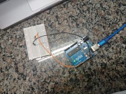
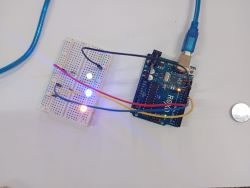
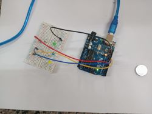
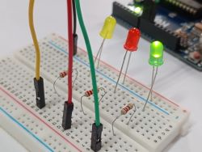
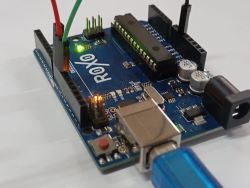
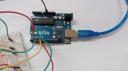
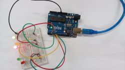

Nessa aula conhecemos os conceitos de LED e Resistor;
Reconhecemos a Resistência Elétrica de um Resistor;
Aprendemos como definir os Resistores a serem utilizados em circuitos com LEDs;
Programamos o acendimento de LEDs em três projetos com Resistores.

Aula 8 - LED e resistor
Nessa aula utilizamas 01 Placa Arduino Uno R3; 01 Cabo USB; 01 Placa Protoboard; 03 LEDs; 04 Jumpers Macho-Macho; 03 Resistores 220 Ohms; Resistores Variados; 01 Notebook; Software mBlock ou Arduino IDE. Nessa conhecemos os conceitos de LED e Resistor.


Aula 9 - Semáforo [Carros]
Nessa aula utilizamos 01 placa Protoboard, 01 Placa Arduino Uno R3, 01 Cabo USB, 04 Jumpers macho - macho, 03 Resistores 220 Ohms, 01 LED vermelho 5mm, 01 LED verde 5mm, 01 LED amarelo 5mm, O1 Notebook e Software mBlock ou Arduino IDE.


Aula 11 - Semáforo [Pedestres]
Nessa aula utilizamos 01 Placa Protoboard, 01 Placa Arduino Uno R3, 01 Cabo USB, 06 Jumpers, 05 Resistores 220 Ohms, 02 LEDs vermelhos 5mm, 02 LEDs verdes 5mm, 01 LED amarelo 5mm, 01 Computador, Software mBlock ou IDE Arduino.
Fizemos a simulação de como funciona um Semáforo de pedestres.


Aula 13 - Push Button
Nessa aula utilizamos 01 LED 5mm, 01 Resistor de 220 Ohms, 01 Resistor de 10 Quiloohms, 01 Push Button, 04 Jumpers Macho - Macho, 01 Placa Protoboard, 01 Placa Arduino Uno, 01 Cabo USB, 01 Notebook, Software mBlock ou Arduino.
Nessa aula utilizamos 1 placa de Arduino; 1 módulo display 7 segmentos com 4 dígitos; 4 jumpers macho-fêmea; 1 notebook; Software Arduino IDE; Software mBlock. Programamos um contador que varia de 0 a 9999 com o dispositivo
módulo display de 7 segmentos com 4 dígitos
Aula 16 - Display 7 Segmentos
Nessa aula utilizamos 1 placa de Arduino; 1 módulo display 7 segmentos com 4 dígitos; 4 jumpers macho-fêmea; 1 notebook; Software Arduino IDE; Software mBlock. Programamos um contador que varia de 0 a 9999 com o dispositivo
módulo display de 7 segmentos com 4 dígitos
Aula 16 - Display 7 Segmentos
Nessa aula utilizamos 1 placa de Arduino; 1 módulo display 7 segmentos com 4 dígitos; 4 jumpers macho-fêmea; 1 notebook; Software Arduino IDE; Software mBlock. Programamos um contador que varia de 0 a 9999 com o dispositivo
módulo display de 7 segmentos com 4 dígitos